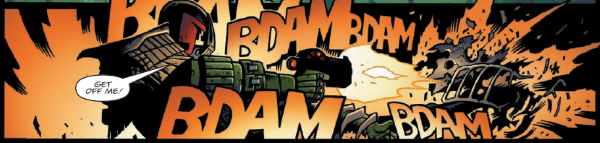

Judge Logan was first a desk-bound assistant to Dredd, but rose up the ranks to become a Senior Judge, then a Sector Chief and finally Chief Judge (replacing Hershey). His most controversial action has been to move forward the Mechanismo program, against the wishes of Dredd and many other Judges, and citizens. He lost his left arm, twice: once in heavy combat and (after it was medically regrown) from the touch of Dark Judge Mortis. His current left arm is bionic, as it turns out that Mortis-decayed limbs cannot be regrown.
Art by Colin MacNeil & Chris Blythe
| Story Title | Parts | Pages | w indicates a wraparound coverCovers | Year(s) | Issues | Writer | Artist | Colourist | Letterer |
|---|---|---|---|---|---|---|---|---|---|
From Judge DreddThe Satanist | 7 | 42 | 1352: Cliff Robinson & Chris Blythe 1356: Charlie Adlard 2 | 2003 | 1350-1356 | John Wagner | Charlie Adlard | Chris Blythe | Tom Frame |
From Judge DreddTerror | 8 | 49 | 1393: Andy Clarke and Chris Blythe 1 | 2004 | 1392-1399 | John Wagner | Colin MacNeil | <-- | Tom Frame |
From Judge DreddTotal War | 12 | 72 | 1410: Nick Percival 1414: Simon Parr 1417: Simon Coleby 3 | 2004 | 1408-1419 | John Wagner | Henry Flint | Chris Blythe | Tom Frame |
From Judge Dredd Featuring: ‑ The Fargo Clan ‑ Judge SolomonOrigins [part 1] | 17 | 96 | 1505: Brian Bolland 1510: John Higgins 1512: Rufus Dayglo 1514 [w]: Simon Coleby and Chris Blythe 1518: Mark Harrison 4,1w | 2006-2007 | 1505-1517, p2007, 1518-1519 | John Wagner | Carlos Ezquerra | <-- | Annie Parkhouse |
From Judge Dredd Featuring: ‑ The Fargo Clan ‑ Judge SolomonOrigins [part 2] | 7 | 43 | 1529: Cliff Robinson 1532: Boo Cook 2 | 2007 | 1529-1535 | John Wagner | Carlos Ezquerra | <-- | Annie Parkhouse |
From Judge Dredd Main subtitle: "Tour of Duty".The Talented Mayor Ambrose | 13 | 78 | 1681: Ben Willsher 1684: Cliff Robinson 2 | 2010 | 1674-1686 | John Wagner | John Higgins | Sally Hurst | Annie Parkhouse |
From Judge Dredd Main subtitle: "Tour of Duty".Mega-City Justice | 7 | 42 | 1690: Greg Staples 1 | 2010 | 1687-1693 | John Wagner | Carlos Ezquerra Hector Ezquerravarious | <-- | Annie Parkhouse |
From Judge DreddHot Night in 95 | 3 | 30 | M308: Clint Langley 1 | 2011 | M307-M308, M310 | John Wagner | Staz Johnson | Chris Blythe | Annie Parkhouse |
From Judge Dredd Main subtitle: "Day of Chaos".Nadia | 8 | 49 | 1743: Clint Langley 1749: Garry Brown 2 | 2011 | 1743-1749 | John Wagner | Ben Willsher | Chris Blythe | Annie Parkhouse |
From Judge Dredd Main subtitle: "Day of Chaos".Elusive | 6 | 36 | 1753: Paul Marshall & Abigail Bulmer 1 | 2011 | 1753-1758 | John Wagner | Henry Flint | Chris Blythe | Annie Parkhouse |
From Judge Dredd Main subtitle: "Day of Chaos".The Assassination List | 6 | 36 | 1759: Clint Langley 1763: Henry Flint 2 | 2011-2012 | 1759-1763, 1764 | John Wagner | Leigh Gallagher | Chris Blythe | Annie Parkhouse |
From Judge Dredd Main subtitle: "Day of Chaos".Eve of Destruction | 20 | 120 | 1768: Ben Willsher 1770: Leigh Gallagher 1776: Chris Weston 1781: Henry Flint 1783: Karl Richardson 5 | 2012 | 1765-1784 | John Wagner | Henry Flint: 1‑5, 11‑16 Ben Willsher: 6‑10 Colin MacNeil: 17‑20 various | Chris Blythe | Annie Parkhouse |
From Judge Dredd Part of the Day of Chaos arc.The Days After | 1 | 6 | 0 | 2012 | 1789 | John Wagner | Henry Flint | Chris Blythe | Annie Parkhouse |
From Judge DreddDark Justice | 11 | 66 | p2015: Greg Staples [thematic wraparound] 1915: Greg Staples 1921: Greg Staples [wraparound] 2,1w | 2014-2015 | Reprints: http://goo.gl/mgqoWw p2015, 1912-1921 | John Wagner | Greg Staples | <-- | Annie Parkhouse |
| Chief Judge | |||||||||
From Judge DreddMachine Law | 8 | 48 | 2115: Cliff Robinson and Dylan Teague 2119: Luke Preece 2121: Steven Austin and Chris Blythe 3 | 2019 | 2115-2122 | John Wagner | Colin MacNeil | Chris Blythe | Annie Parkhouse |
From Judge DreddUnearthed | 2 | 12 | 0 | 2019 | 2124-2125 | Chris Weston Rob Williamsvarious | Patrick Goddard | Chris Blythe | Annie Parkhouse |
From Judge DreddControl | 4 | 26 | 2141: Chris Weston 2145: Chris Weston 2 | 2019 | 2141-2145 | Rob Williams | Chris Weston | Chris Blythe | Annie Parkhouse |
From Judge DreddGuatemala | 8 | 48 | 2153: Dylan Teague 1 | 2019 | 2150-2157 | John Wagner | Colin MacNeil | Chris Blythe | Annie Parkhouse |
From Judge DreddFather's Day | 1 | 12 | 0 | 2019 | M414 | Rory McConville | Ian Richardson | Matt Soffe | Annie Parkhouse |
From Judge DreddKill Bloopy | 4 | 24 | 0 | 2020 | 2163-2166 | Kenneth Niemand | Dan Cornwell | Jim Boswell | Annie Parkhouse |
From Hershey Title on page is just "Hershey".Disease | 8 | 48 | 2176: Simon Fraser 1 | 2020 | 2175-2182 | Rob Williams | Simon Fraser | <-- | Simon Bowland |
From Judge DreddEnd of Days | 15 | 92 | 2184: Steven Austin & Quinton Winter 2185: Patrick Goddard & Dylan Teague 2189: Neil Roberts 2192: Richard Elson 2199: Paul Williams & Chris Blythe 5 | 2020 | 2184-2195, 2197-2199 | Rob Williams | Colin MacNeil: 1‑6 Henry Flint: 7‑15 various | Chris Blythe | Simon Bowland: 1 Annie Parkhouse: 2‑15 various |
From Judge DreddThe Fugitive | 1 | 10 | 0 | 2020 | M421 | Rory McConville | Staz Johnson | Jim Boswell | Annie Parkhouse |
From Judge DreddCarry the Nine | 4 | 24 | 0 | 2020 | 2200-2203 | Rob Williams Arthur Wyattvarious | Boo Cook | <-- | Annie Parkhouse |
From Judge DreddHe Sees You When You're Sleeping | 1 | 10 | 0 | 2020 | M427 | Rory McConville | Agustin Padilla | Chris Blythe | Annie Parkhouse |
From Judge DreddProject Providence | 3 | 30 | 0 | 2021 | M433-M435 | Rory McConville | Staz Johnson | Pippa Bowland | Annie Parkhouse |
From Judge DreddHow Do You Solve a Problem Like Francisco? | 1 | 10 | 0 | 2021 | M436 | Rory McConville | Nick Dyer | Gary Caldwell | Annie Parkhouse |
From Judge DreddPraise Zort | 4 | 40 | 0 | 2022 | M440-M443 | Rory McConville | Staz Johnson | Chris Blythe | Annie Parkhouse |
| year | episodes | pages |
| 2001 | 0 | 0 |
| 2002 | 0 | 0 |
| 2003 | 7 | 42 |
| 2004 | 20 | 121 |
| 2005 | 0 | 0 |
| 2006 | 15 | 84 |
| 2007 | 9 | 55 |
| 2008 | 0 | 0 |
| 2009 | 0 | 0 |
| 2010 | 20 | 120 |
| 2011 | 22 | 145 |
| 2012 | 22 | 132 |
| 2013 | 0 | 0 |
| 2014 | 1 | 6 |
| 2015 | 10 | 60 |
| 2016 | 0 | 0 |
| 2017 | 0 | 0 |
| 2018 | 0 | 0 |
| 2019 | 23 | 146 |
| 2020 | 33 | 208 |
| 2021 | 4 | 40 |
| 2022 | 4 | 40 |